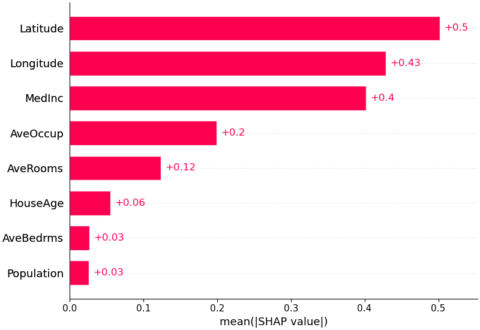
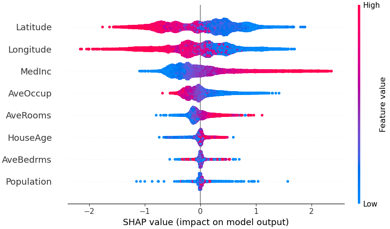
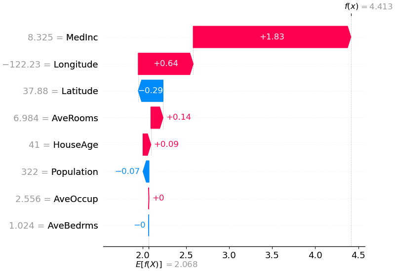
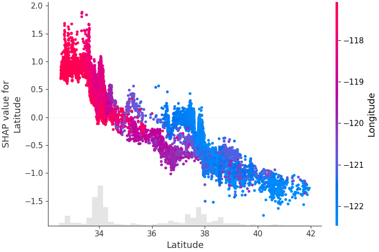

SHAP 이론¶
Lundberg & Lee (2017)가 제안한 SHAP(SHapley Additive exPlanations)은 현재 ML 해석의 사실상 표준이다. 게임이론의 Shapley Value를 ML에 적용하여, 개별 예측값을 변수별 기여분으로 정확히 분해한다.
2.1 Shapley Value의 직관¶
"각 변수가 예측에 기여한 공정한 몫은 얼마인가?"
5명이 팀 프로젝트를 했는데 최종 점수가 90점이다. 각자의 기여도를 공정하게 분배하고 싶다면?
Shapley Value의 방법: 모든 가능한 팀 조합에서, 해당 멤버가 참여할 때와 참여하지 않을 때의 점수 차이를 평균낸다.
변수 \(j\)의 SHAP value:
- \(S\): 변수 \(j\)를 제외한 변수들의 부분집합
- \(\hat{f}(S)\): 집합 \(S\)에 포함된 변수만 "참여"했을 때의 모형 기대값
- 가중치 \(\frac{|S|!(p-|S|-1)!}{p!}\)는 해당 조합이 나타날 확률 — 모든 순열에서 균등하게 가중
신용평가 직관
차주 A의 부도 확률 예측이 15%이고, 전체 평균이 5%라면, 10%p 차이를 만든 "공범"은 누구인가? SHAP은 DTI가 +4%p, 연체일수가 +3%p, 소득이 +2%p, 나머지 변수가 +1%p 기여했다는 식으로, 각 변수의 몫을 공정하게 분배한다.
2.2 SHAP의 핵심 성질¶
Shapley Value는 다음 4가지 공리를 유일하게 만족하는 분배 방법이다.
| 성질 | 의미 |
|---|---|
| Efficiency (효율성) | 모든 변수의 SHAP 합 = 예측값 - 기대값 |
| Symmetry (대칭성) | 기여가 동일한 변수는 같은 SHAP 값 |
| Dummy (무관 변수) | 예측에 영향 없는 변수의 SHAP = 0 |
| Additivity (가산성) | 앙상블의 SHAP = 개별 모형 SHAP의 평균 |
Efficiency가 특히 중요하다¶
개별 예측값이 기대값(base value) + 각 변수의 기여분으로 정확히 분해된다. 남거나 빠지는 것이 없다. 이것이 SHAP을 단순 변수 중요도 이상의 도구로 만드는 성질이다.
여기서 \(E[\hat{f}(X)]\)는 학습 데이터(training set) 전체에 대한 모형 예측의 평균이다1. 모든 관측치의 "출발점"이 이 평균이고, SHAP value는 각 관측치가 평균에서 얼마나, 왜 벗어나는가를 변수별로 분해한 것이다.
숫자 예시 — SHAP value가 예측을 분해하는 과정¶
DTI, 연체일수, 소득 3개 변수를 사용하는 부도 예측 모형을 생각하자. 학습 데이터 전체의 평균 부도확률이 5%라면, log-odds 공간에서:
이제 3명의 차주에 대해 SHAP value를 계산하면, 다음과 같은 SHAP value matrix가 산출된다:
| 차주 | \(\phi_{\text{DTI}}\) | \(\phi_{\text{연체}}\) | \(\phi_{\text{소득}}\) | SHAP 합계 | \(E[\hat{f}]+\sum\phi\) | 부도확률 |
|---|---|---|---|---|---|---|
| A | +0.8 | +1.2 | +0.3 | +2.3 | -0.64 | 34.5% |
| B | -0.3 | +0.1 | -0.5 | -0.7 | -3.64 | 2.6% |
| C | +0.2 | -0.1 | +0.0 | +0.1 | -2.84 | 5.5% |
읽는 법:
- 차주 A: 평균(-2.94)에서 DTI가 +0.8, 연체가 +1.2, 소득이 +0.3을 밀어올려 최종 -0.64(부도확률 34.5%)에 도달. "연체일수가 가장 큰 위험 요인"
- 차주 B: DTI가 -0.3, 소득이 -0.5로 끌어내려 -3.64(부도확률 2.6%). "소득이 높아서 안전"
- 차주 C: 평균과 거의 동일. 어떤 변수도 크게 밀어내지 않음
시각화하면 이 과정이 더 명확해진다. 차주 A를 예시로:
평균
E[f̂(X)] = -2.94 │
│ DTI +0.8
├──────────→ -2.14
│ 연체일수 +1.2
├──────────────────→ -0.94
│ 소득 +0.3
├────────→ -0.64 = f̂(x_A)
↓
부도확률 34.5%
모든 관측치가 같은 출발점(평균)에서 시작하고, 각자의 변수값에 따라 다른 방향으로 이동하여 최종 예측에 도달한다. 이 이동량의 합이 정확히 예측값 - 평균이 되는 것이 Efficiency 성질이다.
4가지 공리의 유일성
이 4가지 공리를 동시에 만족하는 분배 방법은 Shapley Value뿐이다 (Shapley, 1953). 즉, "공정한 분배"를 이 4가지 조건으로 정의하면, SHAP은 유일한 해다.
2.3 왜 트리에서는 SHAP이 정확히 계산되는가¶
일반 모형의 문제 — KernelSHAP¶
Shapley Value 식 (1)을 정직하게 계산하려면, 변수 \(p\)개에 대해 \(2^p\)개의 부분집합을 전부 평가해야 한다. 변수가 20개면 약 100만 개, 50개면 약 \(10^{15}\)개 — 현실적으로 불가능하다.
KernelSHAP(Lundberg & Lee, 2017)은 이 문제를 샘플링 + 가중 선형회귀로 근사한다. 전체 \(2^p\)개 조합 중 일부만 뽑아서, 가중치를 준 선형 모형으로 SHAP을 추정한다. 어떤 모형이든 적용할 수 있다는 장점이 있지만:
- 느리다: 관측치 하나당 수천~수만 회의 모형 호출이 필요
- 근사다: 샘플링에 기반하므로 매번 결과가 약간 달라진다
- 변수가 많을수록 정확도가 떨어진다
트리의 특수한 구조 — TreeSHAP¶
TreeSHAP (Lundberg et al., 2020)은 트리 구조를 활용하여 \(2^p\)개 조합을 전부 평가하지 않고도 정확한 값을 계산한다. 왜 가능한가?
트리 모형에서 "변수 \(j\)가 참여하지 않는다"는 것은, 해당 변수의 분기점을 만났을 때 양쪽 자식으로 다 내려가되, 각 자식의 데이터 비율로 가중 평균을 취하는 것과 같다. 즉, 변수를 "빼는" 연산이 트리의 경로를 따라가면서 자연스럽게 정의된다.
DTI < 40?
/ \
소득 < 300? leaf: 0.02
/ \
leaf: 0.15 leaf: 0.08
이 트리에서 "DTI를 빼고 소득만 참여"시키려면:
- DTI 분기를 만나면 → 양쪽으로 다 내려감 (왼쪽 70%, 오른쪽 30%)
- 소득 분기를 만나면 → 실제 소득값에 따라 한쪽만 감
핵심은, 이 "양쪽으로 다 내려가면서 가중 평균" 연산이 트리의 root에서 leaf까지 한 번만 순회하면 모든 부분집합에 대해 동시에 계산된다는 것이다. \(2^p\)개를 하나씩 계산하는 대신, 트리 경로를 재귀적으로 순회하면서 모든 조합의 기여분을 동시에 누적한다.
결과적으로 복잡도는:
- \(T\): 트리 수, \(L\): 평균 리프 수, \(D\): 트리 깊이
변수 수 \(p\)가 아니라 트리 깊이 \(D\)에만 의존하므로, 변수가 수백 개여도 빠르게 정확한 값을 얻는다.
KernelSHAP vs TreeSHAP 비교¶
| KernelSHAP | TreeSHAP | |
|---|---|---|
| 적용 대상 | 어떤 모형이든 (model-agnostic) | 트리 기반 모형만 |
| 계산 | 샘플링 + 가중 선형회귀(WLS) (근사) | 트리 순회 (정확) |
| 속도 | 느림 (관측치당 수천 회 호출) | 빠름 (\(O(TLD^2)\)) |
| 결과 재현성 | 매번 미세하게 다름 | 항상 동일 |
실무적 의미¶
- XGBoost, LightGBM, CatBoost에 내장되어 있어 별도 근사 없이 정확한 값을 계산 가능
- 트리 기반 모형을 사용하는 신용평가에서는 사실상 TreeSHAP이 표준
- DNN 등 비트리 모형에서는 KernelSHAP이나 DeepSHAP을 사용해야 한다 — 이것이 트리 모형의 해석 측면에서의 또 하나의 이점이다
2.4 SHAP 시각화¶
SHAP 라이브러리는 다양한 시각화를 제공한다. 각각의 용도가 다르다.
Bar Plot — mean(|SHAP|)¶
Global 변수 중요도를 가장 간결하게 보여주는 시각화다. 각 변수의 |SHAP value|를 전체 샘플에 대해 평균내어 내림차순으로 정렬한다.
{kind=link}

출처: SHAP GitHub (MIT License)
- 방향(양/음)은 알 수 없고, 절대적 기여 크기만 보여준다
- 빠른 개요용으로 가장 많이 사용되며, 보고서의 "변수 중요도" 시각화에 적합
Summary Plot (Beeswarm)¶
Global 변수 중요도 + 방향을 한 장에 보여주는 가장 대표적인 시각화다. 각 점은 하나의 샘플이며, x축은 SHAP value, 색상은 변수값의 크기를 나타낸다.
{kind=link}

출처: SHAP GitHub (MIT License)
- 변수 중요도 순서 (위에서 아래)
- 각 변수가 예측을 높이는지 낮추는지 (좌우 방향)
- 변수값과 기여도의 관계 (색상 패턴)
예를 들어, 위 그림에서 MedInc(중위소득)은 값이 높을수록(빨간 점) SHAP value가 양수(오른쪽)에 분포한다 — "소득이 높으면 주택 가격 예측이 올라간다"는 해석이 한눈에 드러난다.
Waterfall Plot¶
개별 예측 건의 분해를 보여준다. base value(\(E[\hat{f}(X)]\))에서 출발하여 각 변수의 기여가 순차적으로 누적되어 최종 예측값에 도달하는 과정을 시각화한다.
{kind=link}

출처: SHAP GitHub (MIT License)
- 거절 사유 설명에 가장 직관적
- 상위 N개 변수만 표시하고 나머지는 합산 가능
Force Plot¶
Waterfall과 같은 정보를 가로 레이아웃으로 표현한 것이다. 빨간 화살표(예측을 높이는 변수)와 파란 화살표(낮추는 변수)가 base value에서 출발하여 양쪽에서 밀어붙이는 "힘겨루기"를 시각화한다.

출처: SHAP GitHub (MIT License)
- Waterfall보다 직관적이지만, 변수가 많으면 가독성이 떨어진다
- 여러 관측치를 세로로 쌓아 전체 데이터의 패턴을 보는 것도 가능
Dependence Plot¶
특정 변수의 값(x축) vs SHAP value(y축) 산점도다.
- 변수의 비선형 효과를 시각화
- 색상으로 교호작용 변수를 표시하면, 같은 변수값에서도 SHAP이 달라지는 원인을 확인 가능
- 1-Depth GBM에서는 이것이 곧 shape function과 동치
{kind=link}

출처: SHAP GitHub (MIT License)
SHAP과 교호작용
Dependence Plot에서 점들이 하나의 곡선에 모이지 않고 퍼져 있다면, 교호작용이 존재한다는 신호다. SHAP은 이 교호작용을 각 변수에 분배한다 — 이것이 "같은 변수, 같은 값인데 차주마다 SHAP이 다른" 현상의 원인이다. 교호작용을 분배하지 않고 분리하는 접근(Functional ANOVA)에 대해서는 fANOVA 개념과 Purification에서 다룬다.
2.5 참고 자료¶
| 자료 | 유형 | 내용 |
|---|---|---|
| Lundberg & Lee (2017) | 논문 (NeurIPS) | SHAP 최초 제안. Shapley Value + ML 해석 통합 |
| Lundberg et al. (2020) | 논문 (Nature MI) | TreeSHAP, SHAP interaction values |
| SHAP GitHub | 라이브러리 | 이론 설명과 시각화 예시가 잘 정리되어 있다 |
| Molnar — Interpretable ML | 온라인 서적 | SHAP 이론의 가장 접근하기 쉬운 설명 |
다음 페이지
1-Depth GBM 스코어카드 --- depth=1 제약으로 교호작용을 제거하여, ML의 비선형 학습과 전통 스코어카드의 해석 가능성을 동시에 달성하는 방법을 다룬다.
-
엄밀히는, TreeSHAP의 기본 모드(
tree_path_dependent)에서는 트리 내부의 node sample count를 기반으로 기대값을 계산하므로, bootstrap sampling 등의 영향으로model.predict(X_train).mean()과 미세하게 다를 수 있다. 정확히 일치시키려면feature_perturbation="interventional"모드를 사용한다. ↩